Page 1 / 原始页码 73
第2篇 细胞的生物学
植物细胞是如何决定生长方向的
有时候，一些看起来很容易的问题其实很复杂。例如：想像一下你手里拿着一片正在旺盛生长的草叶，它的细胞不断分裂着，延伸着，从而使叶片变长。那么，你是否曾想过一个独立的叶片细胞是如何知道该往哪个方向生长的呢？
为了回答这个看似简单的问题，我们首先要弄清楚另一些问题。正如福尔摩斯（Sherlock Holmes）循着线索破案那样，我们必须一步一步地去寻找这个答案。
问题一：首先，我们需要知道一片叶子是如何生长的。
植物细胞与动物细胞有一个重要差别：植物细胞被一层结实的细胞壁包裹着，它由纤维素和一些坚硬的材料构成，这层细胞壁具有保护和支持细胞的作用，就如同坦克的装甲。但坦克是不能延伸成更长的形态，那么植物细胞是如何伸长的呢？
它的生长机制是这样的：正在生长的细胞先产生一些化学物质，使它的细胞壁略带酸性。这种酸性激活一些酶蛋白，这些酶蛋白就从内表面攻击细胞壁，重组纤维素间的连接，使得细胞壁失去它的坚硬性，这样细胞壁就得以拉伸。然后细胞吸水产生膨压，就像给一个长条形气球打气那样，这个细胞就可以伸长生长了。
问题二：在一个生长旺盛的植物器官里，拿叶片来说，每个细胞“气球”都在纵向生长，更准确地说，细胞沿着平行于叶轴的方向伸长生长。这个观察结果引出了第二个问题：各个细胞是如何控制自己的生长方向的呢？
机制是这样的：伸长前，细胞在其内表面铺设了一层纤维素的极小纤维，即微纤维（microfibrils）。若按每单位质量计算，这些微纤维拥有与钢铁一样的抗张强度。这些微纤维就如同钢带那样，垂直于伸长方向聚集，使细胞壁的侧面重新加固，以至于细胞吸入水分时，就只能沿长轴方向延伸了。
问题三：现在我们已经知道了前两个问题的答案，那么，新生的微纤维是如何放置在正确的方向，即垂直于伸长方向的呢？
它的机制是：制造这些微纤维的复杂酶体系由一种特殊的引导物引导，这些引导物就像在铁轨上一样沿细胞内表面运动，酶复合物在这些“导轨”上边运动边放下微纤维，这些“导轨”是由称为微管（microtubule）的链状蛋白质分子构成，并互相交错排列。植物学家称这些与细胞内表面相连的微管为“皮层微管”。
问题四：以上分析只是从一个问题跳到另一个问题而已，那么皮层微管（cortical microtubule）又是如何准确地放置在垂直于伸长方向上的呢？
它是这样做到的：在新生细胞里微管已经装配了，但没有被组织起来，它们随机地排列在杂乱无序的位置，当细胞减弱细胞壁的硬度，准备伸长生长时，微管便组织成为横向的有序排列，即所谓的“皮层微管”。
问题五：最后，我们要回到最初提出的问题：微管是如何准确排列的呢？什么信号引导它们垂直于伸长方向？这就是我们需要回答的。
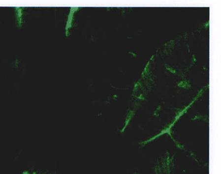
皮层微管 蚕豆表皮细胞的皮层微管被一种荧光蛋白（此蛋白源于一种水母，能够发出荧光。译者注）标记，以观察它们的有序排列。
实验
宾夕法尼亚州大学的 Richard Cyr 实验室通过一个简单而直接的方法解决了这个问题。他们发现坚硬的植物细胞能介导机械作用力，使之从一个植物细胞传到另一个细胞，一个一个地传下去。Carol Wymer（Cry实验室的研究生）认为是某种机械作用力引导皮层微管排列成正确的形状。
Page 2 / 原始页码 74
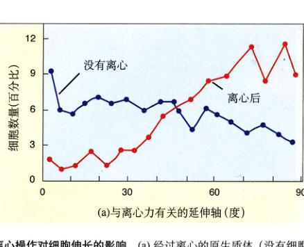
图 2.2 离心操作对细胞伸长的影响 (a) 经过离心的原生质体（没有细胞壁的植物细胞）倾向于沿着垂直于力的方向伸长。(b) 经过微管化学干扰剂 APM 处理后，无论离心与否，原生质体都沿着随机方向生长。
Wymer 利用离心技术来验证她的假说。如皮层微管真的靠一种应力来获得它们的位置信息，那么它们的排列应该受离心力影响，而且当细胞受化学物质干扰而不能形成完整的细胞壁（推测作为传导机械力的物质）时，皮层微管将无法形成正确的排列。
Wymer 和 Cyr 实验室其他研究人员从那些没有伸长生长的细胞开始研究。她用一种酶破坏细胞壁，从烟草 (Nicotiana, tabacum) 中分离原生质体（没有细胞壁的细胞），得到球形的植物细胞。如果继续培养，原生质体将重新形成细胞壁。
为了试验定向力对植物细胞伸长方式的影响，Wymer 和她的合作者将烟草的原生质体放置于由离心作用产生的定向力场中。起初他们发现低速离心预备试验不会改变原生质体的完整性和形状。把原生质体包埋在靠膜支持的琼脂培养基中，以 450 r/min 的转速离心 15 min；接着培养 72 h，让细胞伸长生长。离心以后，荧光标记的微管抗体用于原生质体上，然后用荧光显微镜检测，就可以知道微管的方向。
为了确定在细胞伸长过程中，微管是否作为定向力的“感受器”，在离心前，一部分原生质体用一种扰乱微管的化学除草剂 APM 加以处理。
结果
在 72 h 培养后，他们发现离心力对细胞伸长生长的方向有着很显著的影响。没有经过离心力处理的原生质体中，微管随机排列，散乱无序；而经过离心力处理的原生质体中的微管排列要整齐得多，它们平行于离心力的方向排列，近乎垂直于伸长的方向（图 a）。这些试验结果支持了细胞生长受外部生物物理力量影响的假说。
植物细胞在正常情况下是不会受到离心力作用的，但这个实验显示了物理力是如何影响细胞的生长——大多数是通过影响皮层微管的方向。这种弱小而短暂的生物物理力作用在亚细胞水平上。
用微管干扰剂 (amiprophos-methyl) (APM) 处理原生质体，细胞的伸长生长被阻碍了（图 b）。这表明，微管的重新定向，对于确定植物的伸长方向是有必要的。
综上所述，这些实验支持了一种假说，即由机械力引起的微管重新定向确定细胞伸长。但是哪种自然力造成这种影响还没有定论，这为日后进行大量有趣的类似实验提供了一个机会。
Page 3 / 原始页码 75
第5章 细胞的结构
要点概述
5.1 所有生物都是由细胞组成的
- 5.1.1 细胞 细胞是一个膜包裹的结构单位，它含有 DNA 和细胞质。所有生物都是细胞或细胞的集合体，都是第一批细胞的后裔。
- 5.1.2 细胞的体积极小 微小细胞的相对较大的表面积加快了细胞内外部的交流。
5.2 真核细胞远比细菌要复杂
- 5.2.1 细菌是简单的细胞 细菌细胞很小，而且没有膜包裹的细胞器。
- 5.2.2 真核细胞具有复杂的内部结构 真核细胞内部被各种膜划分成很多区域。
5.3 真核细胞大观
- 5.3.1 细胞核 细胞的信息中心。细胞核把 DNA 与其他物质隔开。
- 5.3.2 内质网：分隔细胞。一种膜的延伸体系，把细胞内部划分成许多区域。
- 5.3.3 高尔基体：细胞的运输系统。一种膜的通道系统，收集、修饰、包装和分配细胞内的分子。
- 5.3.4 液泡：酶的储藏室。含酶的液泡消化和修饰细胞内的颗粒，而其他液泡则用于运输物质进出细胞。
- 5.3.5 核糖体：合成蛋白质的场所。一种指导蛋白质合成的 RNA-蛋白质复合物。
- 5.3.6 含有 DNA 的细胞器。某些具有不同功能的细胞器含有自身的 DNA。
- 5.3.7 细胞骨架：细胞内部的框架。一种网状蛋白纤维，支持着细胞的形状，固定了细胞器的位置。
- 5.3.8 细胞运动。真核细胞利用细胞骨架运动。
- 5.3.9 植物细胞特有的物质。植物细胞有一个中央大液泡，还有结实的多层细胞壁。
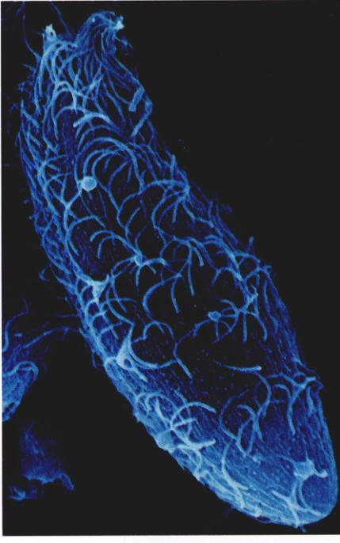
图 5.1 单细胞生物——长颈虫 (Dileptus) 体表的毛状突起是纤毛。借助纤毛的摆动，长颈虫可在水中游动（1000×）。
5.4 共生现象对于真核细胞一些细胞器的起源起关键作用
5.4.1 内共生
所有生物都是由细胞组成的。轻薄的蝴蝶翅膀和我
们亮晶晶的眼睛外层都是由一薄层细胞组成的,你吃下
去的汉堡包和西红柿也是由细胞组成的,它们的成分将
很快成为你细胞的一部分。一些生物只是由一个单细胞
所组成,小得难以用肉眼看见(图5.1),然而另一些生
物,如我们人类,是由大量细胞组成的。细胞是生物组
成的单元,我们无法想像在自然界里一个没有细胞的生
物是怎么样的。在这一章里,我们将详尽地介绍细胞的
内部结构,在后面的章节里,我们将重点地讨论细胞的
动态生长过程,它们怎样和外界交流,怎样生长,怎样
繁殖。
Page 4 / 原始页码 76
5.1 所有生物都是由细胞组成的
5.1.1 细胞
一个典型的细胞是怎样的呢?它的内部又是怎样的呢?不同生物的细胞有不同的组成方式,但是除去这样的或那样的修饰,所有细胞在最基本的方面还是十分相似的。
在我们详细说明细胞结构前,先总述所有细胞共有
的三大特征:质膜、类核(nucleoid)或细胞核(nucleus)
以及细胞质。
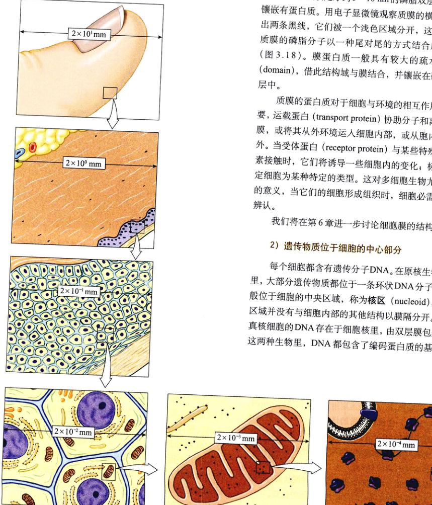
图 5.2 细胞和细胞组分的大小 这幅图显示了人的皮肤细胞、细胞器与分子的大小。一般来说,人的皮肤细胞为 20 μm,即 2 × 10⁻² mm;线粒体的大小为 2 μm,即 2 × 10⁻³ mm;核糖体是 20 nm,即 2 × 10⁻⁵ mm,一个蛋白分子的大小为 2 nm,即 2 × 10⁻⁶ mm,而1个原子的大小是 0.2 nm,即 2 × 10⁻⁷ mm。
1) 质膜包围着细胞
质膜 (plasma membrane) 包围了整个细胞,使之与外界分开。质膜是厚约 5~10 nm 的磷脂双层结构,上面镶嵌有蛋白质。用电子显微镜观察质膜的横截面,呈现出两条黑线,它们被一个浅色区域分开,这是因为构成质膜的磷脂分子以一种尾对尾的方式结合成双层结构（图 3.18）。膜蛋白质一般具有较大的疏水性结构域（domain）,借此结构域与膜结合,并镶嵌在磷脂双分子层中。
质膜的蛋白质对于细胞与环境的相互作用能力很重要,运载蛋白 (transport protein) 协助分子和离子穿过质膜,或将其从外环境运入细胞内部,或从胞内释放到胞外。当受体蛋白 (receptor protein) 与某些特殊分子如激素接触时,它们将诱导一些细胞内的变化;标记蛋白确定细胞为某种特定的类型。这对多细胞生物尤其有重要的意义,当它们的细胞形成组织时,细胞必需能够互相辨认。
2) 遗传物质位于细胞的中心部分
每个细胞都含有遗传分子 DNA。在原核生物（细菌）里,大部分遗传物质都位于一条环状 DNA 分子上,它一般位于细胞的中央区域,称为核区 (nucleoid),但这个区域并没有与细胞内部的其他结构以膜隔开。相对地,真核细胞的 DNA 存在于细胞核里,由双层膜包裹着。在这两种生物里,DNA 都包含了编码蛋白质的基因。
Page 5 / 原始页码 77
3) 细胞质填充了细胞内剩余空间
细胞质是一种半流体的基质,它充满了胞内除核区（或真核细胞的细胞核）外的全部空间。细胞质中含有细胞内大部分的化学成分:糖、氨基酸和细胞用来完成日常生活活动的蛋白质。在真核细胞里,细胞质还包括很多由膜包裹的特异化的“分隔间”,我们称为细胞器（organelle）。
4) 细胞学说
极小的体积是细胞的共性,但仍有极少数例外,一种海藻 Acetabularia 可以长达 5 cm,一个典型真核细胞的直径只有 10~100 μm 大小（图 5.2）,大多数细菌只有 1~10 μm 大。
因为细胞太小了,所以直到17世纪中叶显微镜发明人们才看到它们。1665年,罗伯特·虎克 (Robert Hooke) 首次描述细胞,他利用自己制造的显微镜观察细而薄的软木片———取自某种树的树皮死亡组织,虎克观察到一些小而空（因为细胞已经死了）的蜂巢状的“小房间”,他称这些小房间为 cellulae (拉丁语“小房间”的意思),“cell”一词就是由此演化而来。而在几年后,荷兰的生物学家列文·虎克 (Antonie van Leeuwenhoek) 首先观察到活细胞,他将观察到的微小生物称为“微生动物 (animalcule)”,即微小的动物。但在后来的一个半世纪里,生物学都没能认识到细胞的重要性。1838年,植物学家施莱登 (Matthias Schleiden) 对植物组织做了详细的研究,并首先提出细胞学说,施莱登宣称所有植物“都
是由大量单个、相互独立、彼此分离的‘细胞’组成”。
在1839年,施旺 (Theodor Schwann) 发现所有动物组织
也都是由单个的细胞组成的。
现代的细胞学说包括3方面内容:
- (1) 所有生物都是由一个或多个细胞组成的,新陈代谢和遗传等生命活动都是以细胞为单位进行的。
- (2) 细胞是最小的生命形式,是生物的最基本单元。
- (3) 细胞只能由原来的细胞分裂而来,尽管生命可能酝酿于最初地球的早期环境,但生物学家认为现在不会有细胞自发衍生出来的,因此现在地球上的生命都是从原来的细胞繁衍而来的。
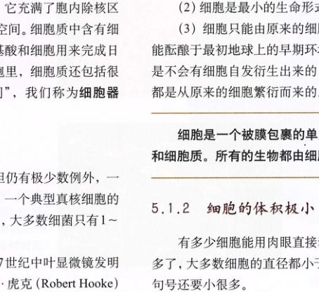
图 5.3 用三种不同显微镜观察到的人类精子细胞 (a) 用光学显微镜看到的精子; (b) 用透射电子显微镜看到的精子; (c) 用扫描电子显微镜看到的精子。
Page 6 / 原始页码 78
(microscope)完成了这一精巧之举。显微镜能够放大细胞,其原理是光线通过玻璃透镜后会发生折射,投影到眼球后视觉细胞的影像大小是由眼睛与物体的距离决定的,距离越小影像越大。然而你的眼睛无法很好地对距离 25cm 以内的物体聚焦,这是由眼球的大小和其晶状体厚度所决定的。罗伯特·虎克和列文·虎克在物体和眼睛之间加入了一片玻璃透镜,增强了我们的聚焦能力。由于玻璃透镜使物体看起来要近一些,因此在视网膜上所生成的影像也比没有透镜时要大。
现在的光学显微镜使用两个放大透镜和各种校正透镜,就像两只背对背的眼睛。第一片透镜形成的像落在第二片透镜上,第二片透镜把像再放大,并成像于我们眼底。用多组透镜进行放大的显微镜称为复式显微镜(compound microscope),它们可以分辨出间距大于 200 nm 的结构。图 5.3a 就是用复式显微镜看到的图像。
3) 提高分辨率
光学显微镜,即使是复式显微镜,也无法分辨许多细胞内的结构,例如一层只有 5 nm 厚的膜。那么为什么不再在显微镜里多加几组透镜来增加它的分辨率呢?这是因为当两个物体的间距小于几百纳米时,两个像的反射光束将发生重叠(光是一种波动,因而会发生衍射,使点光源发出的光经过物镜后变成一组同心圆。校者注)。要使两个靠得很近的光束仍可被分辨的唯一方法,就是使用更短波长的光。
避免重叠的一个办法是用电子束来代替光束。电子比光具有更短的波长,使用电子束显微镜的分辨能力要比光学显微镜高出 1000 倍。透射电子显微镜(transmission electron microscope)是利用电子穿透物质,从而形成样品的像,它可以分辨间距为 0.2 nm 的两个物体,这仅仅是氢原子直径的两倍。图 5.3b 就是用透射电子显微镜看到的图像。
第二种电子显微镜是扫描电子显微镜(scanning electron microscope)。快速来回移动的探针发出一束电子,打在样品表面,从样品表面反射回来的电子信号和
由于电子碰撞样品发射出来的电子信号被放大并传到显示屏上,在屏上形成像。扫描电子显微镜可以获得鲜明的三维图像,有助于我们理解许多生物和物理现象(见图5.3c)。
4) 为什么细胞不能大一点
大部分细胞都不大是基于一些实际的原因,其中最主要是交流的需要。细胞的不同部分需要互相联络,以便细胞作为一个整体有效地发挥作用。蛋白质和细胞器在不断地合成,而各种物质也在不断地出入细胞,所有这些过程都包括物质的扩散。细胞越大,物质穿过质膜到达细胞中心的时间越长。因此,由体积小的细胞形成的生物要比体积大的细胞组成的生物有优势。
小细胞的好处用表面积体积比(surface area-to-volume ratio)更能直观地表现出来。当细胞的大小增加时,其体积的增加比表面积的增加要快很多,如球形细胞,表面积的增加等于半径增加的平方,而体积增加则是半径增加的立方。因此,如果两个细胞的半径相差 10 倍,那么其表面积差 100 倍,其体积相差 1000 倍(图5.4)。细胞只能通过其表面才可以与环境相互作用,因为所有物质必须通过质膜进出细胞,这层膜在控制细胞功能上起着很关键的作用。因为小细胞中单位体积所拥有的表面积比大细胞大,所以控制也更有效。
尽管大部分细胞都很小,但仍然有某些细胞的体积很大,这是由于某些适应机制使它们可以克服表面积体积比的问题。例如,某些细胞有多个核,使遗传信息能够在大细胞内分布,也有某些大细胞使用主动运输
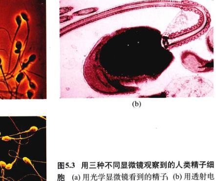
图 5.4 表面积与体积之比 当细胞变大时,它的体积比表面积变大得更快。如果细胞的半径增大 10 倍,那么其表面积将增大 100 倍,而体积将增加 1000 倍。细胞的表面积必须足够大,以便适应其体积的需要。
Page 7 / 原始页码 79
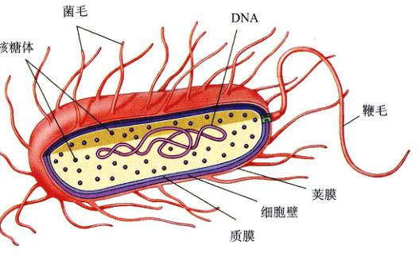
图 5.5 细菌细胞的结构 细菌结构示意图。一些细菌有一些毛发状物长在细胞外,称之为“菌毛”。
在细胞质中运输物质,这可以消除因扩散作用而带来的限制;最后,一些大细胞,如我们神经元(neuron),又长又细,使细胞质里的每个点都可以十分靠近质膜,那么细胞内外的扩散仍然可以很快进行。
多细胞生物多是由许多体积很小的细
胞组成,而不是由较大的细胞组成。这是因为小细胞能更有效地发挥功能,它们有更大的相对表面积,使细胞内外有更快的交流。
5.2 真核细胞远比细菌要复杂
5.2.1 细菌是简单的细胞
细菌,一种原核生物,是最简单的有机体。原核细
胞很小,胞内无明显的细胞器,主要结构包括细胞质、外
层的细胞膜和最外层坚硬的细胞壁。原核细胞就像一个
单房间的小屋:吃、睡,甚至看电视都在同一个房间里
(图5.5)。细菌对于整个生物圈有着重要的作用,它们吸
收光线进行光合作用,分解死去的生物体以重新利用它们
的组分,导致疾病,并参与许多重要的工业生产过程。
我们将在第34章对细菌作重点讨论。
5.2.2 真核细胞具有复杂的内部结构
真核细胞(图5.8和图5.9)远比原核细胞复杂,其
最明显的特征是具有内部的分隔。真核细胞有很多膜围
成的细胞器,使多种生化反应可以在细胞器内同时独立发
生。植物细胞常有一个由膜包裹的很大的囊,称为中央
液泡,里面储存着蛋白质、色素和一些代谢废物。植物细
胞和动物细胞都有膜泡(vesicle),这些小囊用来储存和
运输各种物质。在核里,DNA 紧紧地缠绕在蛋白质上,
紧密包装成为染色体(Chromosome)。所有真核细胞都
由内部蛋白作为支架支撑着,这个支架叫做细胞骨架
Page 9 / 原始页码 81
(cytoskeleton)(图5.24)。动物细胞与一些单细胞生物没有
细胞壁,而真菌、植物细胞和很多原生生物有结
实的细胞壁(cell wall)。细胞壁由纤维素或几丁
质纤维组成,它们镶在由多糖和蛋白质组成的基
质里,这种成分与构成细菌细胞壁的肽聚糖十分
不同。下面让我们更详细地讨论真核细胞内部的
结构及其功能。
真核细胞中具有膜围成的细胞器,它们具
有一些特定的功能。
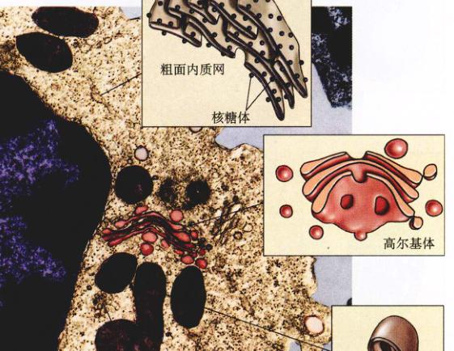
图 5.8 动物细胞的结构 (a) 动物细胞的示意图; (b) 人类白细
胞的显微图像(40500×)和细胞器的详细示意图。
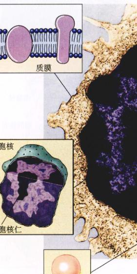
图 5.9 植物细胞的结构 植物细胞的示意图(a)和显
微照片(b)。大部分成熟的植物细胞都有一个中央大液
泡,它占据了细胞内部的大部分体积(14000×)。
Page 10 / 原始页码 82
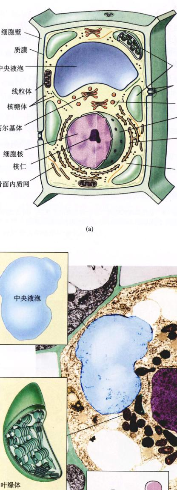
植物细胞的结构 植物细胞的示意图(a)和显
微照片(b)。大部分成熟的植物细胞都有一个中央大液
泡,它占据了细胞内部的大部分体积(14000×)。
Page 11 / 原始页码 83
5.3 真核细胞大观
5.3.1 细胞核:细胞的信息中心
细胞核 (nucleus) 是真核细胞里最大、最容易看见
的细胞器。英国植物学家罗伯特·布朗 (Robert Brown)
在1831年首次对它进行了描述。细胞核近似于球形,在动
物细胞中一般位于细胞的中央区域(图5.10),在某些细
胞里,成网状的细胞质细丝把细胞核固定在这个位置上。
细胞核是储存遗传信息的地方,而这些遗传信息指导了
细胞内一切生命活动。大部分真核细胞只有一个核,而
真菌和其他一些种类有几个甚至很多个核。当哺乳动物
的血红细胞成熟后,它们将失去原来的核。很多细胞核
中有一个深染区域,称为核仁 (nucleolus),是集中合
成核糖体 RNA (即 rRNA)的地方。
1) 核被膜:进与出
细胞核由两层磷脂双分子层的膜围绕,它们构成了
核被膜 (nuclear envelop) (图5.10)。其外膜是细胞质内
膜系统,即内质网的延续,而核孔 (nuclear pore) 则分
散在核膜的表面,呈浅浅的凹陷,就像月球上的火山口,
它们的间距为 50~80 nm。在核孔的位置,两层膜贴在一
起。核孔里并不是空的,而是填充了蛋白质,它们作为
分子的通道,控制特定分子进出细胞核。主要有两种分
子可以通过核孔:①进入细胞核并与其结构结合的蛋白
质和催化核内反应的蛋白质;②在核内合成并运到细胞
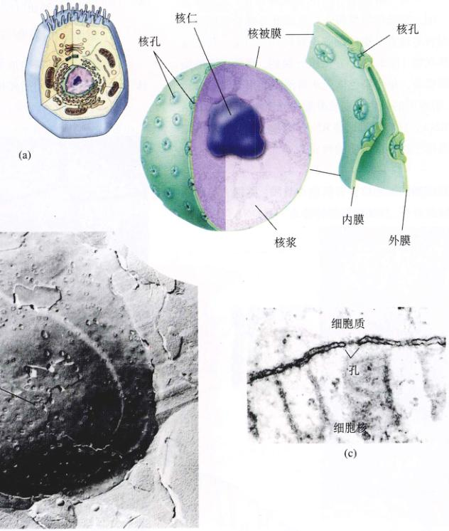
图 5.10 细胞核 (a) 细胞核被双层膜包裹,称为核被膜,里面充满了流质,含有染色体。在横切面上,可见核孔穿过双层核膜;
在核孔里的黑色物质是蛋白质,它控制核孔的通路。(b) 从冷冻断层扫描电子显微镜中看到的细胞核上的核孔(9500×)。(c) 从透射
电子显微镜(参见图6.6)中看到的核膜上的核孔。
Page 12 / 原始页码 84
质的RNA和RNA与蛋白质的复合物。
2) 染色体:包装 DNA
在细菌和真核细胞里,DNA 包含了决定细胞结构和
功能的遗传信息。然而,和细菌那种环状 DNA 分子不一
样,真核生物的 DNA 分成多条线状染色体 (chromo-
some)。除了正在分裂的细胞,染色体都充分伸展成细丝
状,称之为染色质 (chromatin),这是 DNA 与蛋白质的
复合物。这种展开的状态,使蛋白质可以与 DNA 上特殊
的核苷酸片段结合。没有了这种结合 DNA 将无法指导细
胞日常的生命活动。染色体与称为组蛋白 (histone) 的
包装蛋白结合在一起,当细胞准备分裂时,DNA 绕在组
蛋白上,呈高度压缩态,在这种压缩的起始步骤中,可
以看到组蛋白外面缠绕着 DNA 所形成的像饰带一样的单
元,称之为核小体 (nucleosome),这种原始的聚合态就
像绳子上的小珠(图5.11)。DNA 继续螺旋化,直到成为
密集的一团。在光学显微镜下,这些充分螺旋化的染色
体可以很容易地在分裂的细胞里看到,它们是一些染成
深色的棒状物(图5.12)。在细胞分裂后,真核细胞的染
色体将解螺旋,单个染色体无法再清晰地用光学显微镜
观察到。解螺旋的染色体变成舒展的状态,便于酶将 DNA
转录为 RNA,只有通过这些 RNA 拷贝,才能使 DNA 储
存的信息用于指导蛋白质的合成。
真核细胞的细胞核含有其遗传物质,并把它与细胞
的其他物质分开。真核细胞的特征之一是 DNA 可以变成
复杂的染色体。
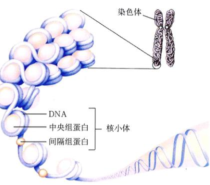
图 5.11 核小体 每个核小体都是由 DNA 紧密缠绕在组蛋白聚
合体周围组成的。
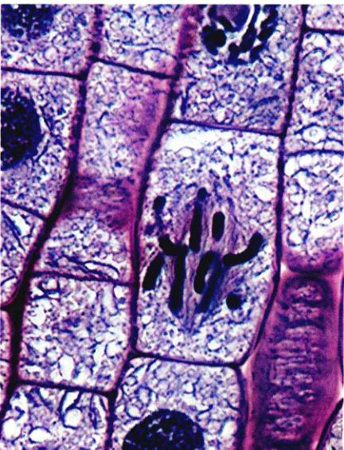
图 5.12 真核细胞的染色体 在光学显微镜下,洋葱根尖里凝
集的染色体很明显(500×)。
5.3.2 内质网:分隔细胞
真核细胞的内部充满了膜结构(表5.1),它们非常
微小,以至于我们无法在低分辨率的光学显微镜下看到
它们。这种内膜系统(endomembrane system)充满了
整个细胞,它对细胞进行划分,控制分子在细胞内部的
通道,还提供了合成脂和某些蛋白质的场所。真核细胞
里的这些膜结构,是真核细胞和原核细胞的最根本区别
之一。
最大的内膜是内质网(endoplasmic reticulum, ER),
endoplasmic 是“在细胞质内”的意思,reticulum 在拉丁
语里是指“小的网”。与细胞膜一样,内质网也是由镶嵌
着蛋白质的磷脂双分子层组成的,它们在细胞内交织成
片层,并在片层之间产生一系列通道(图5.13)。在众多
的细胞分区中,最大的两个是内质网的内部区域,腔间
隙(cisternal space)和外部区域胞质溶胶(cytosol)。
1) 粗面内质网:制造输出蛋白
内质网表面用来合成蛋白质的区域镶嵌有很多核糖
体,核糖体是由蛋白质和核糖核酸(RNA)组成的大分
Page 13 / 原始页码 85
| 结构 |
描述 |
功能 |
| 细胞壁 |
纤维素或几丁质的外壳,或没有 |
保护,支持 |
| 细胞骨架 |
蛋白质丝的网状系统 |
结构支持,细胞运动 |
| 鞭(纤)毛 |
以9+2排列的成对的微管,是细胞的伸长部分 |
运动,或推动表面的液体 |
| 质膜 |
镶嵌有蛋白质的磷脂双分子层 |
调控分子进出细胞,细胞间的识别 |
| 内质网 |
内膜的网状系统 |
形成间隔和小泡,参与脂和蛋白质的合成 |
| 细胞核 |
由两层膜包裹的结构(一般是球形),内含染
色体 |
细胞的控制中心,指导蛋白质的合成和细胞分裂 |
| 高尔基体 |
堆积的平整小囊 |
包装输出的蛋白质,形成分泌泡 |
| 溶酶体 |
由高尔基体产生的小泡,含水解消化酶 |
消化旧的细胞器和细胞残骸,在细胞的死亡过程起作用 |
| 微体 |
由脂和蛋白质共同形成的小泡,内含氧化酶
和其他一些酶 |
把一些特殊的化学反应隔离出来 |
| 线粒体 |
有两层膜的类似细菌的结构 |
细胞的动力工厂,氧化代谢的场所 |
| 叶绿体 |
具有膜的类似细菌的结构,含有光合作用色
素,叶绿体 |
光合作用的场所 |
| 染色体 |
DNA 长链与蛋白质形成的复合体 |
|
| 核仁 |
rRNA 合成的场所 |
核糖体的装配 |
| 核糖体 |
蛋白质与RNA装配成的复合体,很小,常常
黏附在内质网上 |
蛋白质的合成场所 |
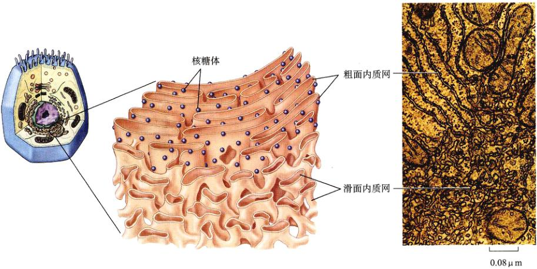
图 5.13 内质网 核糖体只聚集在粗面内质网的一个表面,内质网的另一面作为细胞内的一个单独隔离区域的边界,核糖体将新合
成的分泌蛋白释放其中。滑面内质网几乎没有核糖体黏附。
Page 14 / 原始页码 86
子聚合体,它将 RNA 基因拷贝翻译成蛋白质(我们将在
后续的章节中详细讨论核糖体)。通过电子显微镜观察,
这种富含核糖体的内质网凹凸不平,像沙纸的表面,所
以称它们为“粗面内质网”(rough ER)(图5.13)。
在粗面内质网中合成的蛋白质是要被输出到细胞外
的,它们有特殊的氨基酸序列,称之为信号序列(signal
sequence)。当一个新的蛋白质在一个游离的核糖体(不
黏附在膜上)里合成时,正在合成的多肽链上的信号序
列将黏附在识别因子上,而识别因子将把核糖体和合成
了一部分的蛋白质带到内质网表面上的“停泊区”。这
样,蛋白质一边合成,一边通过内质网膜进入内质网内
部区域,即内质网腔,它们将从这里由小泡运送到高尔
基体(图5.14),再由小泡带到质膜的内表面,最终被释
放到细胞外(除分泌蛋白外,膜蛋白也在内质网上合成。
校者注)。
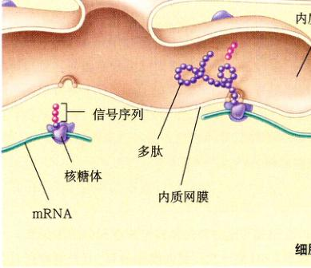
图 5.14 信号序列引导蛋白质到达它们在细胞内的目的地
在这个例子里,分泌蛋白质(由核糖体制造)上的一段疏水氨
基酸序列(信号序列)使它附在内质网的膜上。蛋白质一边合
成,一边穿入内质网的内腔。信号序列将在引导蛋白质进入内
腔后被剪去。
2) 滑面内质网:组织内部的活动
滑面内质网(smooth ER)是黏附极少核糖体的内质
网,它的膜上镶嵌着很多酶,这些酶中的大多数只有在
与膜结合时才有活性。例如,固定在内质网上的酶可以
催化多种碳水化合物和脂的合成。在大量合成脂类的细胞
里,如睾丸、小肠和大脑的细胞里,滑面内质网特别丰
富。在肝脏,光滑内质网上的酶参与如安非他命(抗抑郁
药。校者注)、吗啡、可待因和苯巴比妥药物的解毒等
作用。
质膜向内出芽而形成小泡的过程称为胞吞作用
(endocytosis)。一些小泡进入细胞质,并与光滑内质网融
合,另一些小泡形成次级溶酶体和一些内泡。
内质网(ER)是由膜折叠延伸成的系统,它将真核
细胞内部划分成区,并形成通道。粗面内质网合成蛋白
质,而滑面内质网合成脂类以及进行其他一些生物合成
反应。
5.3.3 高尔基体:细胞的运输系统
在内膜系统的不同部位存在一些平整堆叠起来的膜,
称之为高尔基体 (Golgi body),它们之间常常互相连结,
这种结构首先被19世纪的意大利内科医生 Camillo Golgi
注意到,并因此得名。原生生物的细胞通常含有一个或
Page 15 / 原始页码 87
几个高尔基体,而动物细胞有 20 个或以上,植物细
胞有几百个,生产和分泌物质的腺体细胞含有特别多的高
尔基体(图5.15)。总体而言,Golgi body 指的就是高尔
基体(Golgi apparatus)。
高尔基体收集某些部位合成的分子,然后包装,并
分配到别处进行利用。高尔基体有前后之分,它们两端的
膜组成有明显的不同,前面,即接受端,称之为顺面,
通常靠近内质网。内质网以出芽的方式发出小泡,小泡
包裹着物质移向高尔基体的顺面,并与之融合,把里面
的物质“放入”高尔基体的内腔,这些由内质网合成的
分子穿过高尔基体的通道,到达其后面,即释放面,又
称之为反面。在那里,它们通过分泌泡的形式释放出来
(图5.16)。
粗面内质网和滑面内质网合成的蛋白质和脂类在高
尔基体内运输,并在穿行的过程中被修饰,最常见的改变
是加上短的糖链,或对糖链进行修饰。如果加在蛋白质
上,就形成糖蛋白;加在脂类上,则形成糖脂。在很多情
况下,高尔基体内的酶会修饰已在内质网中合成的糖蛋
白或糖脂,从糖链上切去一个糖或修饰一个或多个糖。
新生或已被修改的糖蛋白和糖脂聚集在高尔基体的
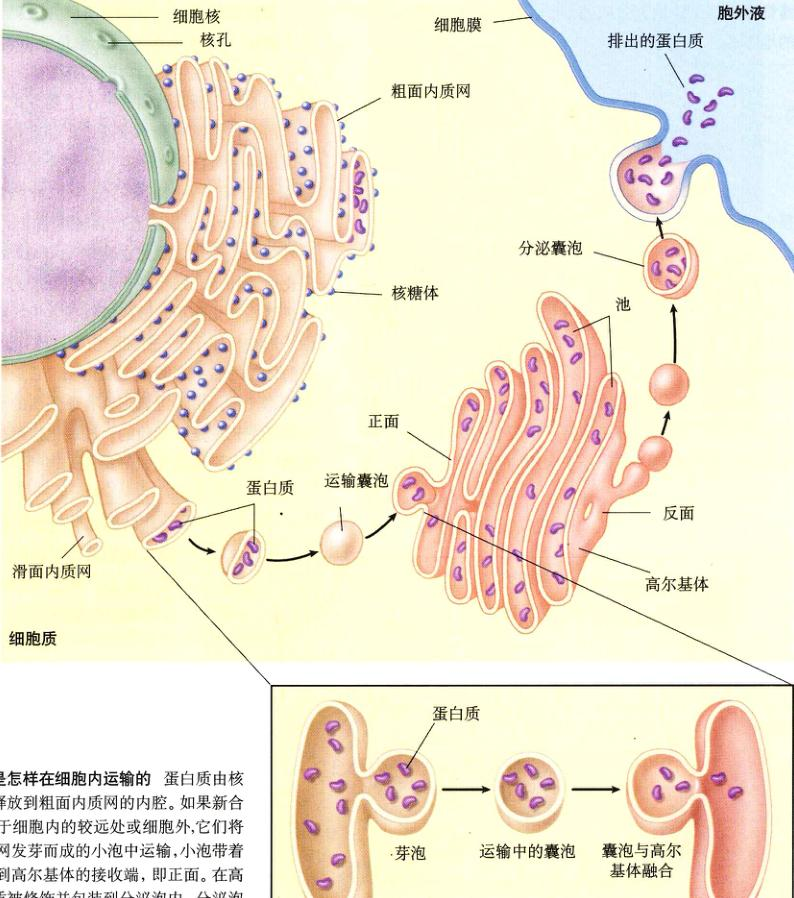
图 5.16 蛋白质是怎样在细胞内运输的 蛋白质由核
糖体生产,并被释放到粗面内质网的内腔。如果新合
成的蛋白质被用于细胞内的较远处或细胞外,它们将
包在由粗面内质网发芽而成的小泡中运输,小泡带着
这些蛋白质运输到高尔基体的接收端,即正面。在高
尔基体中,蛋白质被修饰并包装到分泌泡内,分泌泡
由高尔基体释放面,即反面移出,到达细胞的其他地
方,或与细胞膜融合,把内含物释放到细胞外。
Page 16 / 原始页码 88
端部,即平整堆叠的膜折叠处,此处成为池或潴泡
(cisternae,拉丁语是“聚集的容器”的意思),潴泡的膜
会周期性地挤在一起,挤出一些小的由膜包裹的分泌泡,
内含一些糖蛋白和糖脂的分子。这些小泡将移到细胞内
的其他位置,把新合成的分子分配到合适的地方。脂质
体(liposome)是一种人工制造的小泡,里面含有我们需
要的物质(如药物),它可以通过注射进入我们的身体。
因为脂质体的膜与质膜和细胞器的膜相似,所以脂质体
可以作为一种自然而有效的细胞运输系统,有很大的医
疗价值。
高尔基体是真核细胞的运输系统。它收集、包装和
修饰在细胞某些地方合成的分子,并把它们分配到有用
的地方去。
5.3.4 液泡:酶的储藏室
1) 溶酶体:细胞的消化中心
溶酶体(lysosome)是一种由膜包裹的消化泡,也
是内膜系统的一部分,由高尔基体产生。它们含有大量
的降解酶,可以快速催化蛋白质、核酸、脂类和碳水化
合物的降解。在真核细胞的整个生活史里,溶酶体的酶
会破坏旧的细胞器,重新利用它们的成分,并为新生的
细胞器提供空间。例如,在某些组织里,线粒体每10天
就更新一次。
溶酶体的消化酶在酸性环境下才能更好地发挥作用。
它通过把质子泵入内部来维持一个较低的pH值,使溶酶
体里的一组水解酶(催化分子水解的酶)保持最高的活
性,从而活跃地进行消化作用。初级溶酶体(primary
lysosome)不会维持内部酸性的pH值,所以水解作用不
太活跃,当它与食物泡或其他细胞器融合后,pH值将降
低,从而激活水解酶,这时它就变成次级溶酶体
(secondary lysosome)。
除了降解细胞器和其他一些结构外,溶酶体还会清
除吞入的其他细胞,该过程叫做吞噬(phagocytosis),是特
殊的胞吞作用(见第6章)。例如,当白细胞吞噬一个病
原体时,形成的食物泡与溶酶体结合,溶酶体将酶释放
到食物泡中,把里面的东西降解掉(图5.17)。
2) 微体
真核细胞内有一系列含有酶并被膜包裹的小泡,称
之为微体(microbodies)。无论是植物细胞、动物细胞、
真菌,还是原生生物,内部都有微体。酶在微体内的分
布是细胞组织新陈代谢的一个主要方式。
溶酶体是从内膜系统通过出芽方式形成的,而微体
是通过整合蛋白质和脂类,然后分裂、生长形成的。植
物细胞含有一种特殊的微体,称为乙醛酸循环体
(glyoxysome),里面含有把脂肪转变成碳水化合物的酶。
另外一种微体是过氧化物酶体(peroxisome),其中的酶
催化电子和与之结合在一起的氢原子的移去(图5.18)。
如果这些氧化酶不是被隔离在微体里,那么它们将把氢
原子加在氧原子上,使细胞质的新陈代谢短路。“过氧化
物酶体”的名字来源于过氧化氢,它是微体里氧化酶作
用的副产物。由于过氧化氢有很强的反应活性,所以
它对细胞来说是很危险的。过氧化物酶体里含有过氧化
氢酶,可以把过氧化氢降解成无害的水和氧气。
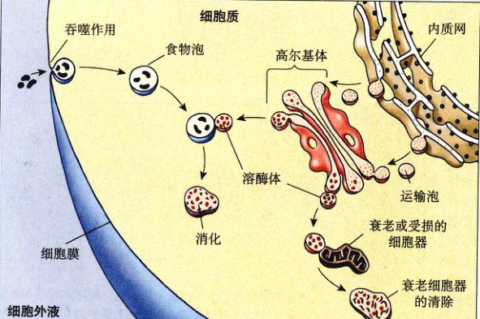
图 5.17 溶酶体 溶酶体含有水解酶,它
可以消化通过吞噬作用进入细胞内的微粒
或其他细胞,还可以降解旧的细胞器。
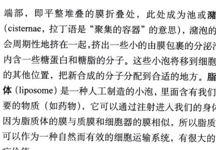
图 5.18 过氧化物酶体 溶酶体和过氧化物酶体分别含有
消化和解毒作用的酶,这些酶被隔离
在小泡里,防止与细胞其他物体发生
不恰当的消化反应。
Page 17 / 原始页码 89
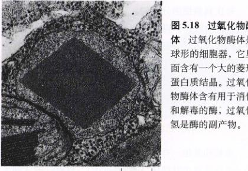
图 5.18 过氧化物酶体 过氧化物酶体是
球形的细胞器,它里面含有一个大的菱形
蛋白质结晶。过氧化
物酶体含有用于消化
和解毒的酶,过氧化
氢是酶的副产物。
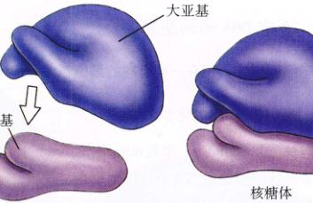
图 5.19 核糖体 核糖体由一大一小两个亚基组成,它们都由
rRNA和蛋白质构成。单个的亚基在核仁内合成,然后通过核孔
到达细胞质,并在细胞内组装成核糖体。核糖体是蛋白质合成
的场所。
5.3.5 核糖体:合成蛋白质的场所
尽管细胞核里的 DNA 编码了细胞中每个蛋白质的
氨基酸序列(实际上线粒体和叶绿体也编码某些蛋白质。
校者注),但蛋白质并不是在核里组装的。一个简单的实
验证明了这一点:用放射性标记的氨基酸对细胞进行短
时间的脉冲标记(即标记很短的时间后洗去核素,加入
无放射性的氨基酸。校者注),这样,含有放射性的蛋白
质是那些新合成的蛋白质,它们不在细胞核里,而是在
细胞质里。研究人员首次做这个实验就发现,蛋白质的
合成与一个很大的 RNA-蛋白质复合体相联系,这就是
核糖体(ribosome)。
核糖体的成分包括几种特殊的 RNA 分子,叫做核糖
体 RNA,即 rRNA,它们与几十个不同的蛋白质结合在
一起。核糖体是细胞内最复杂的聚合体之一。每个核糖
体由两个亚单位组成(图5.19),这两个亚单位只有与细
胞质里另一种 RNA 结合时,才能使核糖体发挥作用,这
种 RNA 就是信使 RNA (mRNA)。信使 RNA 是 DNA 片段
的转录拷贝,它与核糖体结合后,利用 DNA 片段上的信
息指导蛋白质的合成。
细菌的核糖体比真核细胞的核糖体小,而且细菌一
般只有几千个核糖体,而新陈代谢活跃的真核细胞,如
人体的肝细胞,含有几百万个核糖体。由细胞质中悬浮
的自由核糖体合成的蛋白质在细胞质中发挥作用,而附
在粗面内质网上的核糖体合成的蛋白质将输出到细胞外
或结合在膜上。
核仁:生产核糖体的亚单位
当细胞要合成大量蛋白质时,必须先生产大量核糖
体。为了促进这个过程,DNA 上几百个编码 rRNA 的基
因拷贝在染色体上聚集成簇,通过从这样的基因簇中转
录 RNA,细胞将快速地产出大量用于制造核糖体的分子。
在任何时刻,都有很多 rRNA 分子分布在染色体编
码 rRNA 的基因簇(称为 rDNA。校者注)的位置上,蛋
白质与这些的 rRNA 结合,装配核糖体。核糖体的装配
区在细胞核内清晰可见,呈现为一个或多个深染色区,
称之为核仁(nucleoli)(图5.20)。即使染色体舒展开,仍
能在光学显微镜下看到核仁,而染色体的其他部分则不
同,只能在压缩状态下才能被看到。
核糖体是细胞质内合成蛋白质的场所。
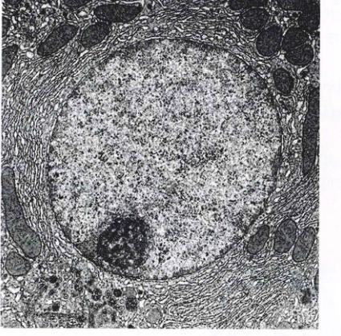
图 5.20 核仁 这是被放大了6000倍的老鼠肝细胞的内部结
构。一个很大的细胞核占据了显微照片的中心,细胞核左下方
电子致密的区域是核仁,核糖体的主要成分在此合成,核仁体
周围可见尚未完全形成的核糖体。
Page 18 / 原始页码 90
5.3.6 含有DNA的细胞器
除了细胞核外,还有一些有趣的细胞器含有DNA。
1) 线粒体:细胞的化学火炉
线粒体 (mitochondria,单数 mitochondrion):一般是
管状或香肠状的细胞器,大小与细菌相当,在所有种类
的真核细胞内都有(图5.21)。线粒体是被双层膜包裹的:
平滑的外膜和有很多皱褶的内膜,这些皱褶称为嵴.
(cristae,单数 crista)。嵴把线粒体划分成两个区域:基
质 (matrix) (在内膜里)和一个外室 (或称为膜间隙)
(intermembrane space),在线粒体的两层膜之间)。催化
氧化代谢的蛋白质镶嵌在内膜上或结合在内膜表面。氧
化代谢是需氧过程,通过该过程大分子的能量将储存在
ATP 里。
线粒体含有自己的DNA,这些DNA含有几个基因,
用于合成参与线粒体内氧化作用的重要蛋白质,所有这
些基因都要转录到RNA上,并在线粒体里合成蛋白质。
在这个过程中,线粒体所用的小RNA分子和核糖体也是
由其DNA编码的,然而大部分编码氧化代谢所需酶的基
因仍在细胞核里。
每次真核细胞分裂时,它不会生产出一套新的线粒
体,而是由线粒体自我分裂为二将数量加倍,这些分裂
出来的线粒体将分配到新的细胞去。线粒体分裂所需的
物质大都被细胞核里的基因编码,并由细胞质的核糖体
翻译出来。因此,没有细胞核的参与,线粒体是不可能
复制的,因而它也无法在无细胞的培养条件下生长。
2) 叶绿体:光合作用的场所
植物和其他一些发生光合作用的真核生物,一般含
有一个至几百个叶绿体 (chloroplast)。含有叶绿体的生
物有一个显著的优势:它们可以生产自己的食物。叶绿体
含有光合作用所需的叶绿素,这使很多植物都显示出绿
色来。
与线粒体相似,叶绿体也是由两层膜包裹着(图5.22)。
然而,叶绿体比线粒体要大而复杂,除了彼此紧密结合
的内膜和外膜,叶绿体还含有另一个由堆叠的膜形成的
封闭区域,称为基粒 (grana,单数 granum),它位于内
膜的内部。一个叶绿体含有一百个以上的基粒,而每个
基粒里都含有几个至几十个圆盘状的类囊体
(thylakoids)。在类囊体表面上,有用于光合作用的捕光
色素,我们将在第10章对此进行讨论。在类囊体周围的
是液态基质(stroma)。
和线粒体一样,叶绿体也含有DNA,但很多编码叶
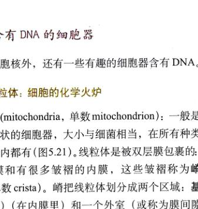
图 5.21 线粒体 (a) 线粒体的内膜形成皱褶,称之为嵴。嵴大
大地增加了氧化代谢的表面积。(b) 线粒体的纵切面和横切面
(70 000 ×)。
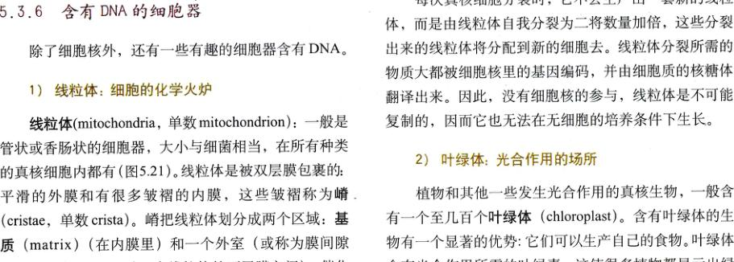
图 5.22 叶绿体的结构 叶绿体的内膜融合成堆叠的小泡,称为类囊体。光合作用就在这些类囊体里发生。类囊体一个一个叠
起来,形成基粒。
Page 19 / 原始页码 91
绿体成分的基因仍在细胞核内。一些用于光合作用的成
分,包括一些光合作用必需的特殊蛋白,完全在叶绿体
内合成。
植物里另外一些含有DNA的细胞器是白色体,它没
有色素和复杂的内部结构。在根细胞和其他的植物细胞
里,白色体作为淀粉的储存场所,储存淀粉(直链淀粉)
的白色体有时也称为淀粉体(amyloplast)。这些细胞器
————叶绿体、白色体和淀粉体,统称为质体(plastid)。所
有质体都是由原有质体分裂而来的。
3) 中心粒:微管的集合中心
中心粒 (centriole) 是桶状细胞器,在动物细胞和很
多原生生物里都有,它们成对存在且相互垂直,位于核
膜附近(图5.23),在几乎全部动物细胞中,成对中心粒
周围的区域被称为中心体(centrosome)。尽管仍有争议,
但至少某些中心粒里应该含有DNA,可能是用于合成其
结构蛋白质。中心粒帮助装配微管(microtubule),一种
由管蛋白(tubulin)组成的长而中空的圆筒状结构。微
管可以影响细胞的形状,在细胞分裂时移动染色体,还
产生了诸如鞭毛和纤毛等内部功能性结构,我们会在后
面对此作讨论。中心体可以存在于被称为微管组织中心
(microtubule organizing center, MTOC)的区域。尽管植
物细胞和真菌细胞没有中心体,但生物学家仍在致力于
研究它们的微管组织中心。
线粒体和叶绿体都含有与它们功能有关的特殊基因,
但都要依靠核内基因来完成其他功能。一些中心粒也含
有DNA,似乎是用于帮助其结构蛋白的合成。
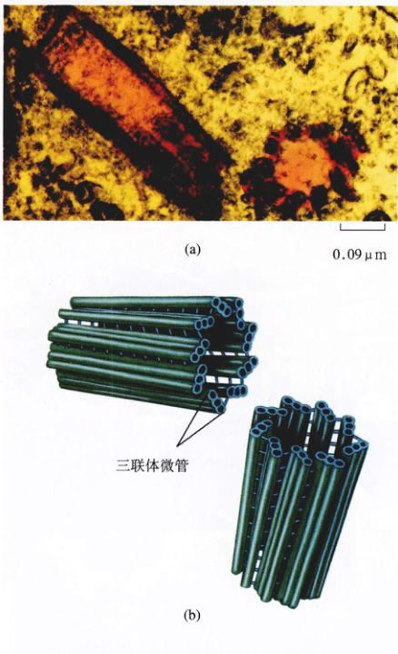
图 5.23 中心粒 (a) 这个电子显微图是1对中心粒(75000×)。
圆形的是中心粒的横截面,长方形的是纵截面。(b)每个中心粒由
9组三联体微管组成。
Page 20 / 原始页码 92
5.3.7 细胞骨架:细胞的内部框架
真核细胞的细胞质是由纵横交错的网状纤维蛋白支
撑着,并由此而维持细胞的形状,固定细胞器的位置,这
种网状结构称为细胞骨架(cytoskeleton)(图5.24)。它
是个动态系统,一直处于形成和去组装的过程中。单个
纤维通过聚合作用(polymerization)形成,即同样的蛋
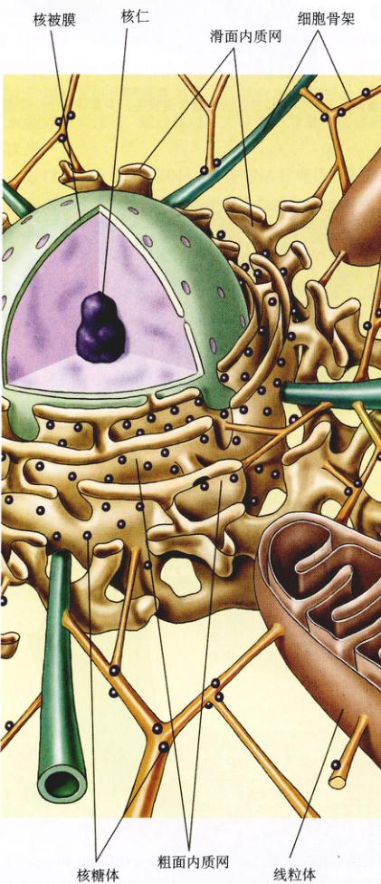
图 5.24 细胞骨架 这张真核细胞横切面的示意图,显示了由
纤维蛋白构成的网络———————细胞骨架,该网络支持着线粒体等细
胞器。
白质单元通过化学作用一个接一个自动连接起来,形成
一条长链。纤维通过相同的途径分解,即亚基从链的一
端一个接一个地脱离出来。
真核细胞含有3种细胞骨架纤维,每种都由不同的
亚基组成:
1) 肌动蛋白丝
肌动蛋白纤丝(actin filament)(又译为细肌丝),是
直径约为7nm的长纤维。每条丝由两条相互松散地缠绕
在一起的蛋白质链组成,就像两串珍珠(图5.25a),每
颗珍珠,即亚单元,就是一个球形的肌动蛋白(actin),即
使在试管里,肌动蛋白也自动地形成这些细丝。细胞通
过其他蛋白来控制这些细丝的形式,它们就像开关那样,
在恰当的时间打开,启动聚合作用。肌动蛋白丝负责细
胞的运动,诸如细胞收缩、蠕动、分裂后期的缢裂以及
形成细胞的延伸。
2) 微管
微管是直径约25nm的中空管道,由13条蛋白质原
丝围成一个圆环,原丝由和两种管蛋白亚基的二聚
体形成的球蛋白聚合而成,原丝并列围绕一个圆心排列,
形成微管这种管道形状。在很多细胞里,微管从细胞中
央的微管组织中心的核心形成,并向四周辐射。它通常
处于流动态,不断地聚合和分解(不分裂细胞微管的平
均半衰期约10min,而正在分裂细胞的微管半衰期可短
达20s)。鸟苷三磷酸(GTP)结合到微管端部,可以抑
制微管分解,从而得到它的结晶。微管中远离细胞核的
一端用“+”表示,朝细胞核的一端用“-”表示。微管
不但可以使细胞运动,还负责细胞内的物质运动。在本
章后面我们会讨论特殊的马达蛋白(motor protein),它
们沿着微管“轨道”移动细胞器,驱动蛋白(kinesin)把
细胞器移向“+”端(朝向细胞外周),而动力蛋白(dynein)
把它们移向“-”端。
3) 中间丝
动物细胞的细胞骨架中最持久的成分,是一种由强
韧的纤维以互相交错的方式缠绕在一起形成的体系(图
5.25c)。这些纤维的直径一般为8~10nm,大小介于肌
动蛋白丝和微管之间,因此称之为中间丝(intermediate
filaments),又称中间纤维。(实际上,中间丝的得名是因
为其直径介于肌肉的粗、细肌丝,即肌球蛋白丝和肌动
蛋白丝之间,而不是肌动蛋白丝与微管之间。校者注)一
旦形成,中间丝就很稳定,一般不会分解。中间丝形成
异质的细胞骨架纤维,其中最普遍的一种由波形蛋白
Page 21 / 原始页码 93
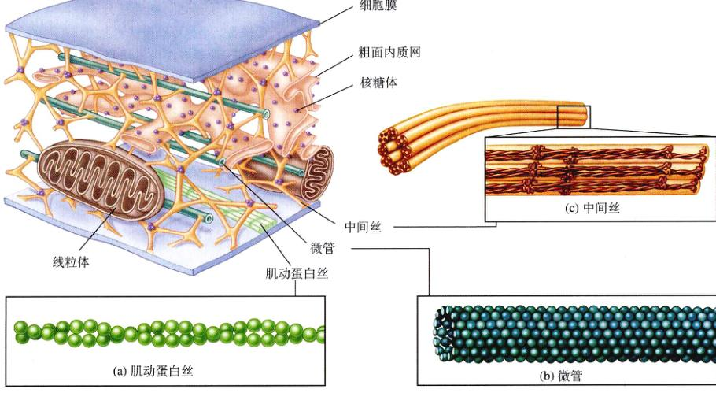
图 5.25 组成细胞骨架的分子 (a) 肌动蛋白丝 肌动蛋白丝由两束纤维肌动蛋白相互缠绕而形成,常以一束束的形态存在。肌动蛋
白丝无处不在,它们常常一束束地集中在细胞膜下面,这就是应力纤维,有收缩功能。(b) 微管 微管由13排管蛋白亚单位并列排
列,形成一个管。微管是比较坚硬的细胞骨架成分,在非分裂期细胞内,它负责组织新陈代谢和胞内运输。(c) 中间丝。中间丝由交
错排列的蛋白四聚体组成,这种排列组成了一个绳状结构,它承受了施加于细胞的巨大的机械力。
(vimentin)组成,为很多类型的细胞提供结构的稳定
性;角蛋白(keratin)是另一种中间丝,存在于上皮细
胞(排列在器官和体腔表面)和附属结构(如毛发和指
甲)中;神经细胞的中间丝称为神经丝(neurofilament)。
细胞骨架为细胞提供了内部框架,维持了细胞的形
状,并像马戏团帐篷的杆子那样撑起细胞膜。我们将在
下一部分对此进行讨论。改变细胞骨架纤维的相对长度,
可以迅速改变细胞的形状,向外伸出突起或向内收缩。
在细胞里,纤维框架为分子的运输提供了一条条分子
“公路”。
细胞骨架在细胞质内纵横交错,维持细胞的形状,
固定细胞器的位置。有3种主要的纤维:肌动蛋白丝、微
管和中间丝。
因为肌动蛋白丝可以快速地形成或分解,所以它们可以
使某些细胞快速地改变自己的形状。如果用显微镜看这
些细胞的表面,你将发现它们有频繁的活动,如一种称为
微绒毛(microvilli)的突起(动物细胞中)迅速由细胞表
面伸出,然后收缩,稍后又在别的地方伸出(图5.26)。
5.3.8 细胞运动
实际上,所有细胞移动都与肌动蛋白丝、微管或两
者联合的运动相联系。中间丝作为细胞内的“腱”,防止
细胞过度拉伸;肌动蛋白丝对决定细胞形状起主要作用,
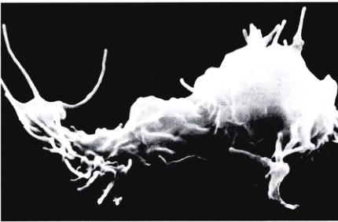
图 5.26 一些细胞的表面在不断地运动 变形虫,一种单细胞原
生生物,它的前缘向外伸出突起。移动的边缘与裙子的褶边很
相似。
Page 22 / 原始页码 94
1) 细胞蠕动
细胞质中肌动蛋白丝的排列使细胞可以蠕动!蠕动
是细胞的一个重要现象,对炎症、凝血、伤口愈合和癌
变的扩散都很重要。白细胞这项能力特别突出。这些细
胞由骨髓形成,并释放到血液循环系统,最终穿过毛细
血管,进入组织,杀死潜在的病原体。
任何时间细胞都处于凝溶胶状态,也就是说,在任
一时刻,细胞某些区域是凝固态,而另一些区域则是流
态。一般来说细胞的内部更像流态,外围更像凝固态。
为了蠕动,细胞先在凝固态的外周产生一些薄弱的区域,
然后使流态的内部通过这个区域,形成“伪足”
(pseudopod)。结果细胞质的很大部分流到另一个地方,
而仍在细胞质膜里。一旦已经延展完毕,伪足又变成凝
固态,并装配肌动蛋白丝。伪足上特殊的膜蛋白粘在其
蠕动的介质表面上,将细胞的其余部分拉向这个方向,
细胞其他部分则落在该方向后面。当细胞后部的肌动蛋
白丝收缩时,就产生了形成伪足的压力,就像挤压水球
一端使另一端鼓起那样。
2) 在细胞内移动物质
肌动蛋白丝和微管常常协调它们的活性,影响细胞
的生命过程。例如,在细胞繁殖(见第11章)期间,新
复制的染色体向相反方向移动,这是因为它们黏附在缩短
的微管上,然后动物细胞里的肌动蛋白丝带收缩,把
细胞“掐”成两个,就像拉荷包绳那样。肌肉细胞也利
用肌动蛋白丝来收缩它们的细胞骨架,眼睫毛的眨动、
鹰的飞翔和婴儿的乱爬都依靠肌肉细胞内骨架的运动。
细胞骨架不但负责细胞的形状和运动,还作为支架,
使一些酶和大分子固定在细胞质中的特定区域。例如,
很多参加细胞新陈代谢的酶附在肌动蛋白丝上,核糖体
也一样。与内质网一样,细胞骨架通过移动和固定特殊的
酶,使之相互靠近来组织细胞的活动。
3) 细胞内的分子马达
某些真核细胞必须把物质从细胞质的一个地方移到
另一个地方。大部分细胞利用内膜系统作为细胞内的公
路,高尔基体把物质包装到小泡里,这些小泡穿过内质
网的通道,到达细胞远处的地方。然而这种“公路”只
对短距离有作用,当细胞不得不长距离运输时,如像神
经细胞轴突这样的距离,内质网的运输就显得太慢了,
在这种情况下,真核细胞发展出一种高速的“机车”,它
在微管“轨道”上运动。
这需要4个成分:①需要运输的小泡或细胞器;②提
供由能量驱动的运动“分子马达”(motor molecule);
③连接小泡和“分子马达”的连接分子(connector
molecule);④微管,小泡可以像铁轨上的火车一样,沿
着它运动。例如一种镶嵌在内质网膜上的蛋白质称为
kinectin,它把内质网的小泡结合到马达蛋白——驱动蛋
白上,作为自然界中最小的发动机,马达蛋白拉动运输泡
沿着微管轨道运动,驱动蛋白利用ATP来发动向四周的
运动,并拖着小泡沿着微管行进。另一种小泡的蛋白质
(或者是经轻微修饰的驱动蛋白,有待进一步研究证实到
底是哪个)把小泡结合到动力蛋白上,这种蛋白质引导反
方向的运动,即朝向细胞的中心(动力蛋白与真核细胞鞭
毛的运动有关,我们将在下面讨论)。一个特殊的运输泡
的目的地与其内容物,由镶嵌在小泡膜上的连结蛋白性
质决定。
4) 用纤毛和鞭毛游泳
在本章的前面,我们描述了细菌鞭毛的结构,真核
细胞含有一种完全不同类型的鞭毛,这种鞭毛由围绕两
个中心微管的9对微管形成的环组成,这种结构称为
“9+2”结构(9+2 structure)(图5.27)。因为微管对之间
是利用由动力蛋白组成的“手臂”交互前后移动的,所
以真核细胞的鞭毛主要是摆动而不是旋转。如果观察仔
细的话,可以看到每条鞭毛都是细胞的一个突起,里面
含有细胞质,并由细胞膜包裹。鞭毛的微管发起于基体
(basal body),它位于细胞表面鞭毛突出的那个点下方。
鞭毛这种复杂的微管结构是在真核生物演化史的早
期发展出来的,尽管现在很多多细胞真核生物和一些单
细胞真核生物不再有鞭毛,也不能自由运动了,但是与
9+2 结构相似的微管组织仍存在于它们里面,存在于被
称为纤毛(cilia,单数 cilium)的结构中。纤毛是细胞的
短突起,它常一列列排列(见图5.1),远比细胞的鞭毛
多,但纤毛与鞭毛的内部结构是一样的。在很多多细胞
生物里,纤毛的作用与它原来用于推动细胞在水中运动
的作用很不一样,例如在哺乳动物的某些组织里,成列
的纤毛摆动,可以移动组织表面的水;哺乳动物耳朵内
的感觉细胞也含有纤毛,声波使这些纤毛弯曲,并开始
传递听觉。如此看来,鞭毛和纤毛的“9+2”结构是真核
细胞的一个基本成分。
在多细胞生物中,一些真核细胞用伪足来蠕动。而
很多原生生物则用鞭毛和纤毛游动。细胞内的物质由一
些特殊的马达蛋白来运输。
Page 23 / 原始页码 95
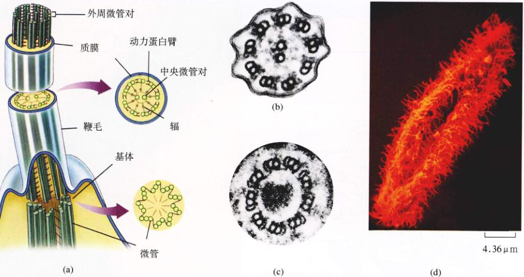
图 5.27 鞭毛和纤毛 (a) 真核细胞的鞭毛直接起源于基体;(b)鞭毛的中心有两条微管,通过辐与外圈9对有动力蛋白臂的微管连
接;(c)基体由9组三联体微管组成,且组与组之间有短蛋白片段相连。纤毛的结构与鞭毛相似,但纤毛通常较短;(d)草履虫表面覆
盖着浓密的纤毛。
5.3.9 植物细胞特有的物质
1) 液泡:中央仓库
植物细胞的中央通常有一个很大的且似乎很空的区
域,称为中央液泡(central vacuole)(图5.28)。这个液
泡不是真的空空如也,它含有大量水和其他物质,如糖、
离子和色素,中央液泡作为这些重要物质的储存中心,
还通过对细胞膜施压,增大细胞的表面积与体积之比。
因为细胞膜在这种压力下向外延展,从而增大了表面积。
2) 细胞壁:保护和支持
植物细胞与细菌有一个共同特点是动物细胞没有的,
这就是植物细胞具有细胞壁(cell wall),这为植物细胞提
供了保护和支持。尽管细菌也有细胞壁,但在化学组成和
结构上,植物细胞的细胞壁与细菌不同,真菌和一些原生
生物也有细胞壁。在植物里细胞壁由纤维素组成,初生细
胞壁(primary wall)在细胞仍在成长时就出现了。在两
个相邻细胞的细胞壁间,有一种称为中胶层(middle la-
mella)的黏性物质,它把细胞粘在一起(图5.29)。某些
植物细胞还会产生结实的次生细胞壁(secondary wall),
它位于完全长成的细胞初生壁内侧。
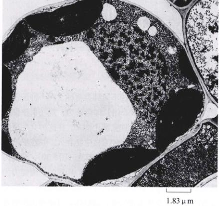
图 5.28 中央液泡 植物细胞的中央液泡储存一些溶解的物质,
且依靠增加自身的体积而增大细胞的表面积。
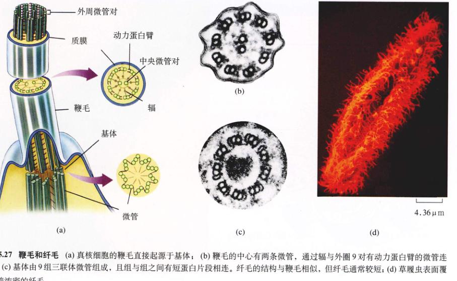
图 5.29 植物细胞的细胞壁 植物细胞把物质储存在一个很大的中央液泡里,把
自己包裹在一个结实的纤维素细胞壁中。
Page 24 / 原始页码 96

图 5.29 植物细胞的细胞壁 如图(a)和透射电子显微镜图像(b)所示,植物细胞的细胞壁比细菌的细胞壁更厚,更硬,更结实。初
生细胞壁存在于幼嫩的细胞中,而更厚的次生细胞壁则在细胞完全长成后才添加上的。
5.4 共生现象对于真核细胞一些细胞器的
起源起关键作用
5.4.1 内共生
共生是在一起生活的不同种类物种之间一种亲密关
系。内共生(endosymbiosis)理论认为,现在真核细胞
的某些细胞器是由共生现象演化而来。在这种共生现象
中,一种原核生物被另一种原核生物吞入,并在里面生
存下来,而后者就是真核生物的祖先(图5.30)。根据内
共生理论,被吞入的原核生物以它们特殊的代谢能力为
其宿主提供利益。真核生物两种关键的细胞器,据说是
这些内共生的原核生物后裔:线粒体,可能是由能够进
行氧化代谢的细菌演化而来的;叶绿体,似乎起源于光
合细菌。
大量证据支持了内共生理论。线粒体和叶绿体都由
两层膜包围着,内膜可能发源于被吞入的细菌,而外膜
可能发源于宿主细胞的质膜或内质网;线粒体与大部分
细菌大小相近,而内部的嵴与多种细菌内皱褶的膜相
似;线粒体的核糖体大小和结构与细菌的核糖体也很相
似;线粒体和叶绿体都含有与细菌 DNA 相似的环状
DNA;最后,线粒体通过简单的分裂,像细菌一样分裂
成两个,线粒体还像细菌那样复制和分配DNA。表5.2
回顾和综合比较了3种类型细胞的特征。
真核细胞的某些细胞器可能源于内共生现象。
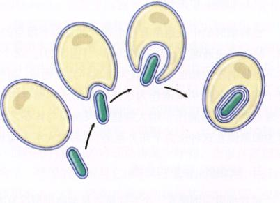
图 5.30 内共生 本图描述了线粒体或者叶绿体双层膜的共生
起源过程。
Page 25 / 原始页码 97
| 外部结构 |
细菌 |
动物细胞 |
植物细胞 |
|
|
|
|
| 细胞壁 |
有 (蛋白质-多糖) |
无 |
|
有 (纤维素) |
| 细胞膜 |
有 |
有 |
|
有 |
| 鞭毛 |
可能有 (单束) |
可能 |
|
无 (一些物种的精子例外) |
| 内质网 |
无 |
通常有 |
|
通常有 |
| 核糖体 |
有 |
有 |
|
有 |
| 微管 |
无 |
有 |
|
有 |
| 中心粒 |
无 |
有 |
|
无 |
| 高尔基体 |
无 |
有 |
|
有 |
| 细胞核 |
有 |
有 |
|
有 |
| 线粒体 |
可能有 |
通常有 |
|
通常有 |
| 叶绿体 |
无 |
无 |
|
有 |
| 染色体 |
单环状 DNA |
DNA 和蛋白质复合物 |
|
DNA 和蛋白质复合物 |
| 溶酶体 |
无 |
通常有 |
|
无 |
| 液泡 |
无 |
无或很小 |
|
通常是单独一个大液泡 |
(区健辉 陈洪涛 佟向军 译校)
Page 26 / 原始页码 98
小 结
5.1 所有生物都是由细胞组成的
- 细胞是生命的最小单位。所有生物都是由细胞组成的。
- 细胞中的核区包含遗传物质。
- 细胞质由细胞膜包围,细胞膜由磷脂和蛋白质组成。
5.2 真核细胞远比细菌要复杂
- 细菌是原核生物,它们不具有细胞内膜系统。它们的 DNA 是环状的。
- 真核细胞体积更大,具有更复杂的内部结构。
5.3 真核细胞大观
- 真核细胞由细胞膜、细胞质和细胞核3个主要部分组成,细胞质中包含有许多执行特定功能的细胞器。
- 许多细胞器都是细胞内膜系统的组成部分,例如内质网、高尔基体(及溶酶体)和细胞核。
- 线粒体和叶绿体是与能量代谢相关的细胞器。
- 细胞骨架由一系列丝状蛋白构成,起着支撑细胞结构等功能。
- 许多真核细胞具有“9+2”结构的鞭毛或纤毛,微管的滑动能使这些细胞附属物发生弯曲。
- 细胞内物质的长距离运输是通过细胞质中的囊泡沿着微管传运而实现的。
5.4 共生现象对于真核细胞一些细胞器的起源起关键作用
- 线粒体和叶绿体可能起源于进化早期的内共生现象,即真核细胞的祖先通过内吞获得某些细菌,而后者在细胞内仍具有原来的功能。
问 题
- 细胞理论的3个基本原理是什么?
- 表面积——体积比是如何决定细胞的大小?
- 真核细胞与原核细胞相比,在细胞壁结构、细胞内部组成以及鞭毛方面有何不同之处?
- 什么是内质网?它有什么功能?粗面内质网和滑面内质网有什么区别?
- 高尔基体有什么作用?它是如何完成物质在细胞中定位的?
- 哪种真核细胞具有线粒体?它们有什么功能?
- 叶绿体有什么独特的功能?
- 中心粒参与什么细胞活动?
- 哪种细胞骨架成分在结构上最稳定?哪种最易变?
- 比较纤毛和鞭毛的异同。
- 生命是内共生理论?有何证据支持这一理论?
媒体资源
- 探索:细胞的大小
- 表面积-体积比
- 实践活动:动物细胞结构、植物细胞结构、非光合细菌、蓝细菌
- 实践活动:细胞核的剖析、高尔基体的结构、线粒体的结构、线粒体嵴的结构、叶绿体的结构、细胞骨架、植物细胞
- 细胞的内膜系统
- 与能量代谢有关的细胞器
- 细胞骨架
- 技能测验:核小体、粗面内质网与蛋白质合成、蛋白质的运输
- 科学家视角:发现的乐趣